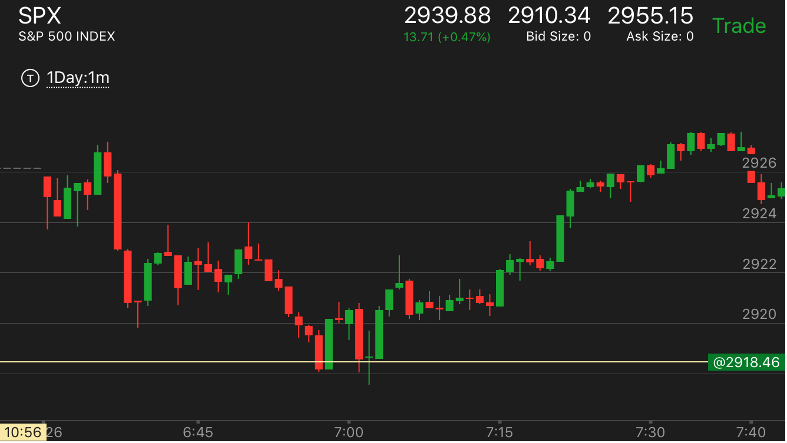

开盘后，冲高大跌。或者冲低大涨
- 冲高后，大跌，说明这个跌一定是第一浪下跌。后面还有第二浪。有时候这个第二浪很快就结束了。但是有时候，第二浪很难结束。一天都在第二浪徘徊
- 走低后，冲高也是一样的情况
开盘后冲高，大跌，出现第一浪
开盘后冲高，大跌，出现第一浪
TOP

图示：开盘后，震荡几分钟，冲高大跌。然后一直震荡。这个可以得出几个结论。第一，这个是第一浪。会有第二浪。第二：未来一定会涨回来。
因为下跌的根基很浅，只有一分钟而已。未来一定会超过这个最高点。它震荡中填补了真空，大跌。两段走势结束。然后大涨。